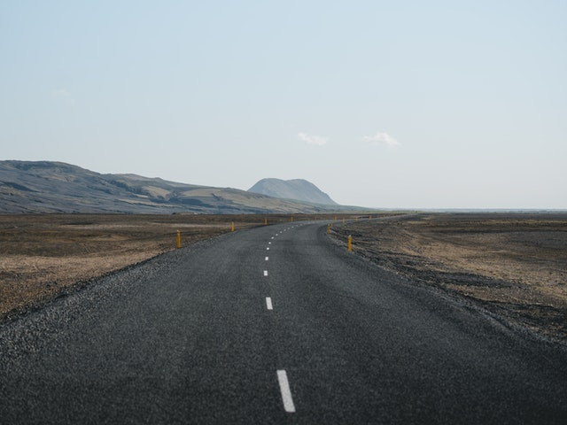

Jess Leonard's Epicodus Portfolio
Here is some information about me and my projects so far.
About Me

- I was born in Oklahoma, but grew up in California.
- I had a destination wedding in New Zealand, and a group 2-week "honeymoon" with our parents and 8 of our closest friends.
- My husband and I met in West Virginia, despite the fact that we were both from Oklahoma.
- I am 31-years-old, and have a 2.5-year-old daughter.
- I graduated from University of Central Oklahoma with a B.A. in History.
- I've worked in the oil and gas industry since completing college.
- I have a side hustle hosting trivia nights around OKC with a local trivia company, called BanjoBug Trivia.
- In my limited spare time, I enjoy playing video games, riding dirt bikes, and trying new beer.
- My husband and I travel as much as we can. We took our daughter to Iceland and Switzerland for her first Christmas.
Blogging Website
This is a sample blogging website I created for Epicodus.
This website is a work in progress, but was a good practice for understanding how floats work. It was created using HTML, CSS, Git and GitHub.
Animal Shelter
This is a sample website for an animal shelter.
This episode is also still a work in progress. It was created to showcase pets that are in need of homes. It was created using HTML, CSS, Bootstrap, Git and GitHub.
My First Webpage
This was the first project we worked on after Hello World.
My First Webpage was created as part of the Epicodus curriculum. It contains links to a page for my favorite things, and another to a page for my dog, Ainsley. It was created using HTML, CSS, Git and GitHub.